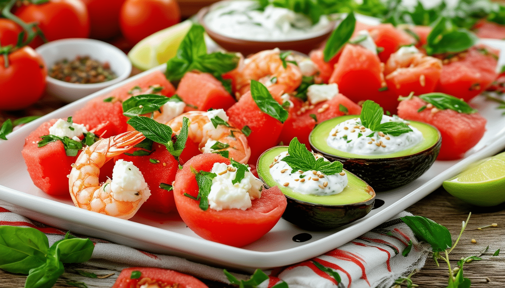
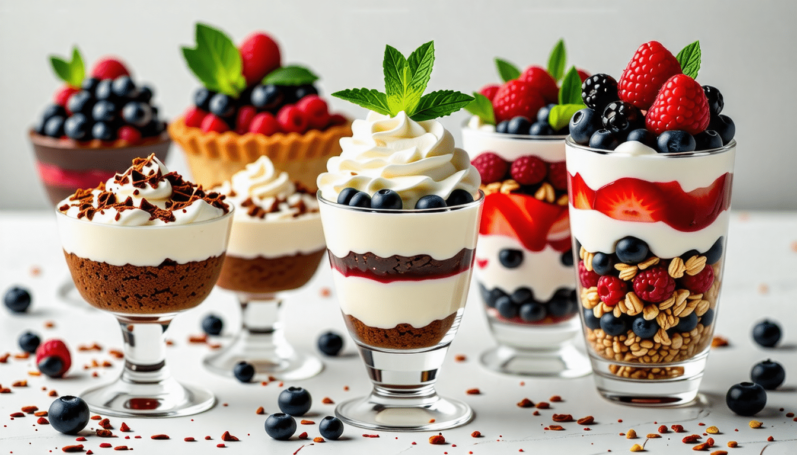

Entrées
- Salade Caprese : Tomates fraîches, mozzarella et basilic arrosés d'un glaçage balsamique.
- Bruschetta : Pain grillé garni de tomates hachées, ail et basilic frais.
- Gougères : Petits choux au fromage servis chauds.
- Tartare à la mangue et au feta : feta, mangues, avocats, Huile d'olive, Quelques feuilles de roquette, gousses d'ail, Quelques pignons, Paprika..
- Feuilletés aux champignons : pâtes feuilletées, champignons, échalote, crème fraîche, vin blanc.

Plats principaux
- Saumon grillé : Filet de saumon assaisonné et grillé à la perfection, servi avec une sauce au beurre citronné.
- Poulet au citron : Blanc de poulet mariné, rôti et servi avec des légumes de saison.
- Pâtes Primavera : Pâtes fraîches avec des légumes de saison et une sauce légère à l'ail.
- Kedjenou de poulet : poulet, aubergines, tomates, oignons, feuilles de laurier, morceau de gingembre, brins de thym, l' huile d'olive, sel et poivre.
- Attiéké poisson et aloko : poisson, alloco, oignon, attiéké.

Desserts
- Fondue au chocolat : Assortiment de fruits et de guimauves servis avec une riche fondue au chocolat.
- Tarte Tatin : Tarte aux pommes caramélisées servie tiède avec de la crème fraîche.
- Mousse au chocolat : Mousse légère et aérienne au chocolat noir, garnie de crème fouettée.
- Croustade aux pommes à l’érable : cassonade, flocon d'avoine, pomme, beurre coupé en dés, farine, jus de citron, sirop d'érable.
- Mini-bagatelles orange et canneberges : canneberges fraîches ou surgelées, jus d’orange, miel, garniture fouettée surgelée légère.